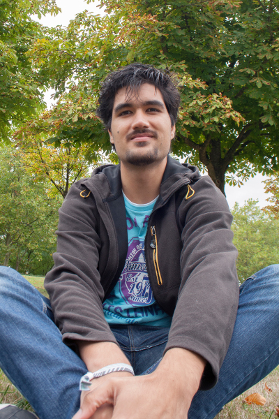

I'm interested in experimentations of all kinds with digital means.
I began my journey with a technical education. I started programming before I was ten. At the university I was heavily involved in the robotics student organization and founded a programming contest for the university group.
It appeared to me that programming is just a tool, and my focus shifted toward how to use it best: project development methodologies, software quality, agile buzzwords, and rapid prototyping. I became obsessed with getting valuable results as fast as possible. Later I even organized weekly game jams where games were made within one hour.
Back in early 2010, I moved to Germany, where I discovered the digital media art movement, game jams, the hacking spirit, and the demoscene.
As I experimented with the video game medium, I used the skills gained during the robotics years with the alternative controllers movement. I became member of the artistic game collective Alineaire.
Taking over the late DemoJS demoparty, I organize the Cookie demoparty and grow it toward a digital art festival where several communities, which are usually distinct (demoscene, indie game devs, musicians...), could be reunited.
This led me to discover the livecoding scene, and to organize regular performative meetings.
Sharing is important for me. Most of my personnal work is on GitHub. I occasionally give courses on topics related to games, network, and software architecture.
I'm currently in Paris, working for Ubisoft.
